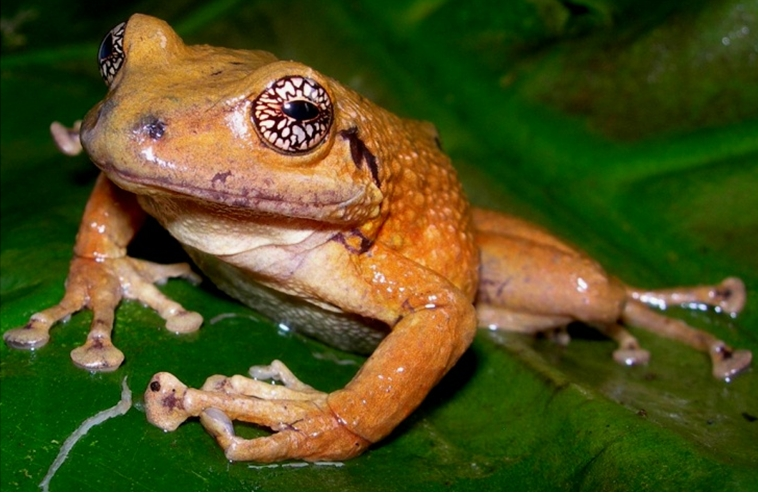
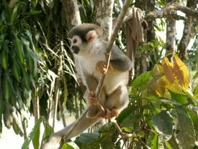

Guacamaya en centro de rescate Flor AmazoniaPocas personas conocen que una de las formas más rápidas y económicas de visitar y disfrutar de la biodiversidad amazónica es visitando la Provincia de Pastaza con su capital Puyo en Ecuador, Sudamérica. Esta se ubica a solo 5 horas de Quito la capital del país. Aqui los costos son más bajos y la belleza natural es cautivante.
La provincia de Pastaza posee una gran variedad ecológica, su flora y fauna es muy variada y única en la región. Pastaza es la provincia más grande del Ecuador. Posee 29.773,7 Km. cuadrados de extensión. Su clima tropical húmedo con una precipitación de más de 3.500 mm. de lluvia cada doce meses, una de las más altas del mundo, genera una diversidad biológica considerable. Otro factor que contribuye a la riqueza ecológica de Pastaza es su clima, cuya temperatura pose una media de 25 grados centígrados, esto propende a que tanto plantas como animales se desarrollen a un ritmo acelerado. Sin embargo hay que recordar que la fragilidad del bosque tropical húmedo está siendo afectada por la tala de bosques y la agricultura mal orientada.
Pastaza esta enclavada en la cuenca del río Pastaza, este río desemboca a su vez en el río Amazonas en el actual Perú. El río amazonas ha sido definido como el río más largo del mundo, tiene más de 6437 kilómetros de largo o el equivalente a 4.000 miles. este es sin duda el río más grande del mundo. Hay varias comunidades indígenas al interior de la provincia que se han preocupado en desarrollar planes de protección ambiental junto a fundaciones e instituciones publicas y privadas. Estos proyectos han visto un gran reto al tratar de concientizar a la población local, pero el trabajo ha dado frutos, hoy existen gran variedad de proyectos de protección ecológica en Pastaza, algunos dedicados a la flora otros a la fauna silvestre. En general grandes extensiones de terreno se hallan protegidas con status de reservas ecológicas privadas y publicas. Organizaciónes de Ecología y Protección Animal
La Hormiga Organización Ecológica Jardin Botanico Las Orquideas Paseo de los Monos Parque Etno-Botánico OMAERE El Ecoparque Puyo Zoocriadero de Fátima
Puyo posee oficinas y centros de información turística que brindan guía y ayuda al turista y a cualquier persona interesada en aprender más de la labor ambiental que se desarrolla en esta región, en Pastaza la practica del eco turismo es posible y real. Pastaza posee ríos y amplias zonas de recreación todo bajo un concepto ecologista, buscando proteger el ambiente y su ecología para las futuras generaciones.
Otros datos ecológicos relevantes sobre Pastaza - Ecuador:
Biodiversidad: En la Amazonía se han clasificado alrededor 160 especies de anfibios y 170 de reptiles. Pastaza posee, 70 especies de anfibios y 35 de reptiles, un nivel mas alto del promedio normal en regiones similares del amazonas.
Gama de Mamíferos: Más del 45% de mamíferos conocidos de la Selva viven en Pastaza. Y aun queda miles de kilómetros por catalogar.
Observación de aves: De las más de 1620 especies de aves del Ecuador, más del 50% de estas viven en la región oriental, incluida la provincia de Pastaza.

